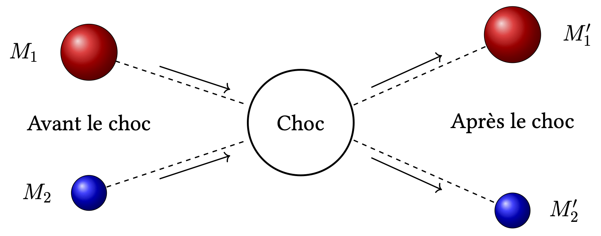
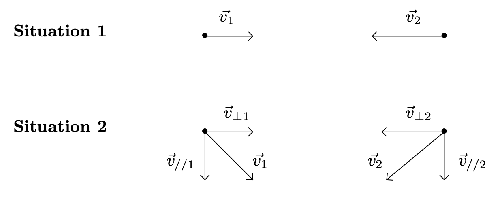

Objectifs
- Interpréter une réaction chimique en termes de chocs efficaces entre entités microscopiques.
- Interpréter l’influence des facteurs cinétiques à l’échelle microscopique.
Quelques définitions
Il arrive que deux molécules $M_1$ et $M_2$ s’entrechoquent (la probabilité de collision faisant intervenir plus de deux molécules est très faible, les réactions chimiques se décomposent donc plutôt, au niveau microscopique, en plusieurs actes dits « élémentaires » à deux entités). Lors de ce choc, les molécules $M_1’$ et $M_2’$ peuvent éventuellement se former. On représente graphiquement cet évènement ainsi :
-
Si $M_1 {=}\mathllap{/\, } M_1’$, le choc est dit efficace ; il y a réaction chimique. Dans le cas contraire, il est dit inefficace, les molécules ne sont pas transformées.
-
Soient $E_{C_1}$ et $E_{C_2}$ les énergies cinétiques de $M_1$ et $M_2$ avant le choc et $E_{C_1}\rq$ et $E_{C_2}\rq$ les énergies cinétiques de $M_1\rq$ et $M_2\rq$ après le choc. Si $E_{C_1} + E_{C_2} = E_{C_1}\rq + E_{C_2}\rq$, le choc est dit élastique. Dans le cas contraire, le choc est dit inélastique.
Chocs efficaces et chocs inefficaces
- Pour décrire le comportement des gaz, on utilise, en première approximation, le « modèle du gaz parfait ».
Donner les caractéristiques de ce modèle.
Réponse
Le modèle du gaz parfait consiste à considérer que les molécules n’ont aucune structure (ce sont des points matériels), n’interagissent pas entre elles mais interagissent avec l’environnement (les parois du récipient).
L’état du gaz parfait dépend uniquement de quelques variables : $P$ la pression, $V$ le volume, $n$ la quantité de matière et $T$, la température. Ces grandeurs sont reliées par la relation $$ PV = nRT $$
- De quelle(s) grandeur(s) d’état $(p, V, n, T)$ dépend la vitesse des molécules constituant un gaz parfait ?
Réponse
Dans le modèle du gaz parfait la vitesse des molécules ne dépend que de la température.
- Pour que les liaisons chimiques d’une molécule de dihydrogène $\ce{H−H}$ et d’une molécule de dibrome $\ce{Br−Br}$ se brisent et forment la liaison de la molécule de bromure d’hydrogène $\ce{H−Br}$, il faut fournir environ $\pu{1,3e-19 J}$. Montrer que si la vitesse dans le référentiel du laboratoire, d’une molécule $\ce{Br2}$ avant le choc est égale à $\pu{0,22 km.s-1}$, et que celle d’une molécule $\ce{H2}$ est égale à $\pu{1,97 km.s-1}$, l’énergie cinétique du système ${\ce{H2 + Br2}}$ est insuffisante pour que le choc soit efficace.
Réponse
$E_C(\ce{Br2}) + E_C(\ce{H2}) = \dfrac{1}{2} m(\ce{Br2}) v(\ce{Br2})^2 + \dfrac{1}{2} m(\ce{H−H}) v(\ce{H−H})^2$
A.N. $ E_C(\ce{Br2}) + E_C(\ce{H2}) = \dfrac{1}{2} \times \dfrac{ 2 \times \pu{79,904e-3 kg.mol-1} }{ \pu{6,02e23 mol-1} } \times (\pu{0,22e3 m.s-1})^2 + \dfrac{1}{2} \times \dfrac{ 2 \times \pu{1,008e-3 kg.mol-1} }{ \pu{6,02e23 mol-1} } \times (\pu{1,97e3 m.s-1})^2 = \pu{1,3e-20 J} < \pu{1,3e-19 J} $
- En quoi un changement de température permet-il de modifier cette situation ?
Réponse
Une élévation de la température du gaz traduit une énergie cinétique plus grande pour chaque molécule.
-
À l’aide d’un bilan d’énergie, effectué dans le référentiel du laboratoire, prenant en compte les énergies cinétiques et de liaison chimiques avant et après un choc moléculaire, montrer qu’un choc efficace est forcément inélastique. On considérera le système isolé.
Données. Énergies molaires de liaison (en $\pu{kJ.mol-1}$) : $\ce{H2}$ ∶ 432, $\ce{Br2}$ ∶ 190, $\ce{H−Br}$ ∶ 362.
Réponse
$$ \ce{ H2 + BR2 -> 2 H-Br } $$
-
$ E_{T,I} = E_C(\ce{H2}) + E_C(\ce{Br2}) + E_P(\ce{H-H}) + E_P(\ce{Br-Br}) $ où $E_P$ sont des énergies potentielles d’interaction.
-
$ E_{T,F} = 2 E_C(\ce{H-Br}) + 2 E_P(\ce{H-Br}) $
Puisque le système est isolé, $\Delta E_T = 0 \iff E_{T,F} - E_{T,I} = 0 \iff 2 E_C(\ce{H-Br}) - ( E_C(\ce{H2}) + E_C(\ce{Br2}) ) + 2 E_P(\ce{H-Br}) - ( E_P(\ce{H-H}) + E_P(\ce{Br-Br}) ) = 0 \iff \Delta E_C + 2 E_P(\ce{H-Br}) - ( E_P(\ce{H-H}) + E_P(\ce{Br-Br}) ) = 0 $
$ \Delta E_C = E_P(\ce{H-H}) + E_P(\ce{Br-Br}) - 2 E_P(\ce{H-Br})$
A.N. $ \Delta E_C = -\pu{432 kJ.mol-1} - \pu{190 kJ.mol-1} + 2 \times \pu{362 kJ.mol-1} = \pu{102 kJ.mol-1}$
Remarque : Pourquoi les signes $\ominus$ devant les valeurs des énergies potentielles d’interaction ? En fait, les valeurs qui sont données sont les énergies molaires de liaison $D(\ce{H-H})$, c’est à dire les énergies qu’il faut fournir aux molécules pour rompre les liaisons. Donc $ E_P(\ce{H-H}) = - D(\ce{H-H})$.
- Proposer une interprétation au fait qu’un choc a d’autant plus de chances d’être efficace que l’angle $\alpha$ entre les trajectoires des molécules $M_1$ et $M_2$ avant le choc est proche de 180°.
Réponse
Situation 1
- $E_{C_1} = \frac{1}{2}\, m_1 v_1^2$ ;
- De même, $E_{C_2} = \frac{1}{2}\, m_2 v_2^2$.
Situation 2
-
$E_{C_1} = \frac{1}{2}\, m_1 (\vec{v}_{\perp 1} + \vec{v}_{// 1})^2 = \frac{1}{2}\, m_1 (v_{\perp 1}^2 + v_{// 1}^2 + 2 \vec{v}_{\perp 1} \cdot \vec{v}_{// 1}) = \frac{1}{2}\, m_1 (v_{\perp 1}^2 + v_{// 1}^2) = \frac{1}{2}\, m_1 v_{\perp 1}^2 + \frac{1}{2}\, m_1 v_{// 1}^2$
-
De même, $E_{C_2} = \frac{1}{2}\, m_2 (v_{\perp 2}^2 + v_{// 2}^2) = \frac{1}{2}\, m_2 v_{\perp 2}^2 + \frac{1}{2}\, m_2 v_{// 2}^2 $
On voit donc que l’énergie cinétique se décompose en deux composantes. Seule la composante « perpendiculaire » est utile pour le choc. La partie « parallèle » n’apporte rien au choc.
- Proposer une interprétation microscopique au fait que la température soit un facteur cinétique.
Réponse
Une élévation de température augmente la probabilité pour qu’un choc soit efficace et conduise à une réaction chimique. De plus, une élévation de température augmente le nombre de chocs entre les molécules (cf. influence de la concentration).
Concentration molaire
On appelle concentration molaire d’un gaz le rapport entre la quantité de matière $n$ de molécules le constituant et son volume $V$.
Réponse
$$C = \dfrac{n}{V}$$
- Déduire de cette définition l’unité de concentration molaire d’un gaz.
Réponse
L’unité est la mole par mètre cube (mole par litre en pratique).
- Exprimer l’expression de cette concentration molaire pour un gaz obéissant au modèle du gaz parfait et en déduire sa valeur à $\pu{400 K}$ et $\pu{1e5 Pa}$.
Réponse
-
$PV = nRT \iff \dfrac{n}{V} = \dfrac{P}{RT}$ ;
-
A.N. $ \dfrac{n}{V} = \dfrac{\pu{1e5 Pa}}{\pu{8,31 J.mol−1.K−1} \times \pu{400 K}} = \pu{3e1 mol.m-3} $.
- Dans les mêmes conditions, on considère un mélange équimolaire de dihydrogène et de dibrome gazeux. Quelle est la concentration molaire de chacun de ces gaz dans le mélange ?
Réponse
-
$ n_{\text{total}} = n(\ce{Br2}) + n(\ce{H2})$ avec $n(\ce{Br2}) = n(\ce{H2})$, donc $n(\ce{Br2}) = n(\ce{H2}) = \dfrac{ n_{\text{total}} }{ 2 }$
-
Donc $C(\ce{Br2}) = C(\ce{H2}) = \dfrac{ n_{\text{total}} }{ 2 V} = \pu{15,1 mol.m-3}$.
- Si l’on réduit le volume d’un tel mélange gazeux à température constante, comment évolue le nombre de chocs entre les molécules du gaz ? Comment évolue la concentration molaire de chaque gaz ?
Réponse
Si on réduit le volume en conservant la quantité de matière constante, les concentrations augmentent. Le nombre de collisions augmente donc aussi.
- Proposer une interprétation microscopique au fait que la concentration des réactifs soit un facteur cinétique.
Réponse
La probabilité pour qu’un choc soit efficace n’est pas modifiée lorsqu’on modifie la concentration des réactifs mais une augmentation de cette concentration entraîne une augmentation des chocs et donc un nombre de cas réussis (réactions chimiques) plus grand.
À retenir
Mécanisme réactionnel
- Un acte élémentaire est une réaction se déroulant à l’échelle microscopique en une seule étape, modélisée par un choc efficace entre deux entités chimiques.
Souvent le passage des réactifs aux produits se décompose, à l’échelle microscopique, en une succession d’actes élémentaires.
- Une réaction chimique complexe peut être décomposée en une succession d’actes élémentaires appelée mécanisme réactionnel.
Un mécanisme réactionnel peut faire apparaître un intermédiaire réactionnel et/ou un catalyseur.
Facteurs cinétiques et catalyseur
-
L’augmentation de la concentration des réactifs se traduit par des collisions plus fréquentes entre les espèces réactives, et donc par une augmentation de la vitesse de disparition des réactifs.
-
L’augmentation de la température se traduit par une agitation plus importante des entités. Elle a donc un double effet : d’une part, les collisions entre les espèces réactives sont plus fréquentes, d’autre part, ces chocs sont plus violents, donc plus souvent efficaces. La vitesse de disparition des réactifs est donc plus grande.
-
L’ajout d’un catalyseur modifie le mécanisme réactionnel d’une réaction, remplaçant une suite d’actes lents en une suite d’actes plus rapides.